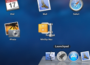

Welcome to WinZip.
If you wish, I can setup myself on your Mac so it will be easier to find me.
You'll be able to reach me in these places:
On the Dock

In the Launchpad
If you want to skip this step, you can still use WinZip. If you're a do-it-yourselfer, you can also set me
up yourself at any time, by dragging me to the Applications folder and Dock.